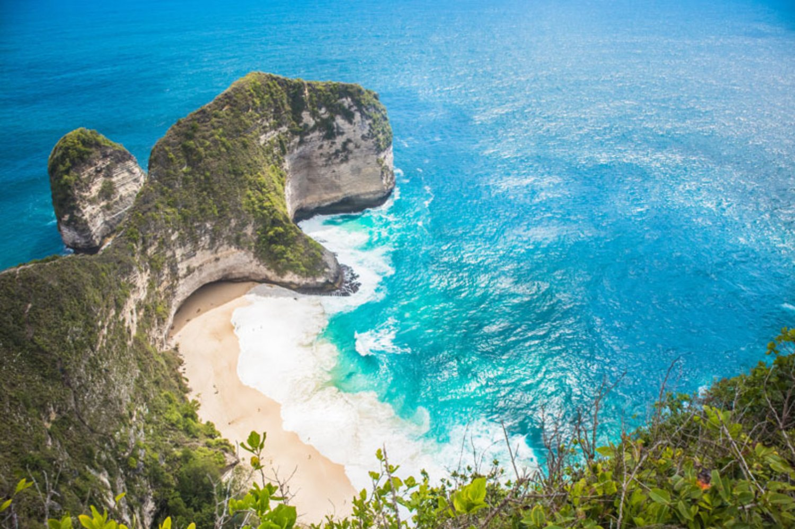
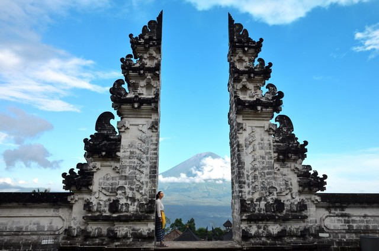

Destinasi Bali

Pura Ulun Danu Bratan
Sebuah landmark terkenal yang indah dan bersejarah, Pura Ulun Danu Bratan adalah destinasi wisata yang sangat populer bagi turis lokal maupun mancanegara. Terletak di posisi strategis di jalan yang menyambungkan Bali Utara dan Selatan. Pura ikonik ini dikelilingi perairan yang tenang bagaikan cermin yang seakan-akan membuat Pura ini melayang. Pura ini telah menjadi spot berfoto favorit bagi banyak orang mulai dari yang menggunakan kamera Polaroid, kamera Digital, hingga era kamera smartphone untuk foto Instagram sekarang ini. Walaupun daya tarik utamanya adalah Pura terapung, tetapi seluruh kompleks Pura sendiri akan memberikan pengalaman bersejarah dengan atmosfer yang menenangkan yang tidak ingin Sobat Pesona lewatkan!

Pantai Kelingking Nusa Penida
Bali memiliki pantai yang menakjubkan dan sangat terkenal di seluruh penjuru dunia karena keindahan alamnya. Pantai Kelingking akan membawa Sobat Pesona ke pengalaman di tingkat yang jauh lebih tinggi. Sebagai salah satu tempat yang paling menakjubkan di Bali, Pantai Kelingking layak dimasukan ke dalam daftar tempat yang wajib Sobat Pesona kunjungi di Bali. Lokasi ini tersohor dengan tebing yang membentuk T-Rex juga pantai indah yang bagai surga tersembunyi. Jalan menuju lokasi ini beberapa berupa tebing-tebing yang curam dan belum memiliki pengamanan yang maksimum, sehingga Sobat Pesona perlu berhati-hati dan memperhatikan tiap langkah serta mengikuti peraturan yang ada. Sobat Pesona akan terpana menyaksikan pemandangan yang menakjubkan dimana perairan biru yang jernih membingkai tebing T-Rex yang ikonik. Sobat Pesona juga dapat melihat pantai tersembunyi di antara tebing-tebing yang hanya dapat diakses secara sangat hati-hati melalui jalan kecil menyusuri anak tangga yang cukup curam.

Pura Luhur Lempuyang
Tempat favorit Instagramable berikutnya adalah Pura Luhur Lempuyang. Destinasi ini adalah Pura gunung kuno yang terletak di Bali Timur. Pura ini diyakini telah berdiri sebelum sebagian besar Pura Hindu di Bali berdiri, serta terletak di 1.175 meter diatas permukaan laut. Ketinggian yang dapat dicapai dengan menaiki anak tangga yang mencapai lebih dari 1.700 buah, dengan banyak spot menarik di sepanjang jalannya, termasuk beberapa Pura yang lebih kecil. Bagi Sobat Pesona yang mencari petualangan dan menyukai pendakian dicampurkan dengan pengalaman melihat situs arkeologi yang eksotis, tempat ini tidak boleh dilewatkan. Tetapi tidak perlu khawatir! Untuk Sobat Pesona yang kurang menyukai hiking, tetap dapat menikmati pemandangan yang menakjubkan dari kaki gunung. Pemandangan eksotis, tradisional, bersejarah dan menakjubkan, sangat sempurna untuk membuat liburan yang tak terlupakan!